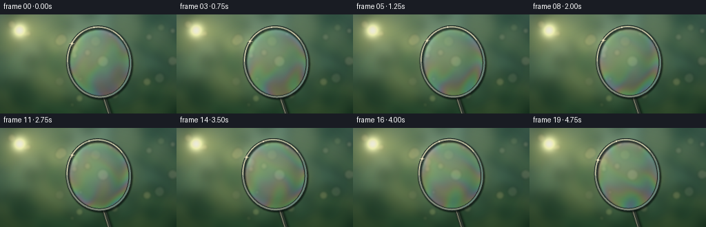
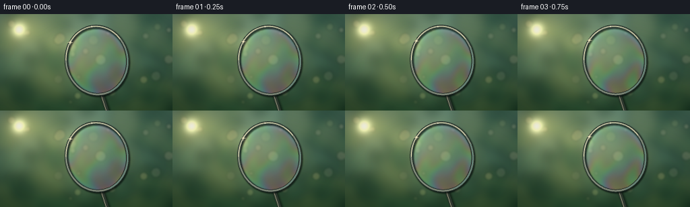

CODING AGENTS AS PIXEL WORLD MODELS
traex/GPT-5.6-Sol · phygen_083
点击播放 · 原生 RGB 像素
逐轮保存的候选
回放视频、检查图与代码变化。
每份候选均可单独播放。实际图片检查记录在下方工具轨迹中。
候选 01播放与检查图
点击播放 · 原生 RGB 像素


展开代码变化
--- 上一保存版本
+++ 本次保存版本
@@ -0,0 +1,236 @@
+from pathlib import Path
+import json
+import numpy as np
+from PIL import Image, ImageDraw, ImageFilter
+import cv2
+import artifact_io
+
+# Procedural macro cinematography of a soap film on a wire wand.
+# Everything is generated from geometry, thin-film interference and soft light.
+ROOT = Path(__file__).resolve().parent
+SPEC = json.loads((ROOT / "task_spec.json").read_text())
+W, H = SPEC["width"], SPEC["height"]
+N = SPEC["frames"]
+SS = 3
+WW, HH = W * SS, H * SS
+rng = np.random.default_rng(8301)
+
+yy, xx = np.mgrid[0:HH, 0:WW].astype(np.float32)
+x = xx / SS
+y = yy / SS
+
+
+def soft_circle_layer(seed=10):
+ """Out-of-focus vegetation and circular lens bokeh."""
+ rr = np.random.default_rng(seed)
+ layer = Image.new("RGBA", (WW, HH), (0, 0, 0, 0))
+ d = ImageDraw.Draw(layer, "RGBA")
+ # dark leafy masses around frame edges, leaving a luminous middle
+ for i in range(115):
+ side = rr.choice([0, 1, 2, 3], p=[.18, .40, .30, .12])
+ if side == 0: cx, cy = rr.uniform(-15, 90), rr.uniform(-20, 150)
+ elif side == 1: cx, cy = rr.uniform(175, 280), rr.uniform(-15, 155)
+ elif side == 2: cx, cy = rr.uniform(-10, 270), rr.uniform(100, 175)
+ else: cx, cy = rr.uniform(-20, 280), rr.uniform(-25, 20)
+ r = rr.uniform(5, 23)
+ # olive-green, sunlit foliage
+ col = rr.choice([(19, 47, 29, 115), (31, 68, 40, 105),
+ (70, 92, 47, 86), (110, 109, 47, 54)])
+ box = tuple(int(v*SS) for v in (cx-r, cy-r, cx+r, cy+r))
+ d.ellipse(box, fill=tuple(int(c) for c in col))
+ layer = layer.filter(ImageFilter.GaussianBlur(7.5*SS))
+ # independent round bokeh glints
+ bokeh = Image.new("RGBA", (WW, HH), (0, 0, 0, 0))
+ bd = ImageDraw.Draw(bokeh, "RGBA")
+ for i in range(24):
+ cx, cy = rr.uniform(5, 252), rr.uniform(3, 139)
+ r = rr.uniform(2.0, 8.5)
+ alpha = int(rr.uniform(12, 48))
+ color = (255, int(rr.uniform(215, 250)), int(rr.uniform(145, 205)), alpha)
+ box = tuple(int(v*SS) for v in (cx-r, cy-r, cx+r, cy+r))
+ bd.ellipse(box, fill=color)
+ bokeh = bokeh.filter(ImageFilter.GaussianBlur(1.6*SS))
+ return layer, bokeh
+
+
+def build_background():
+ # woodland/sky color field, lit from upper left
+ v = y / H
+ base_top = np.array([76., 116., 105.])
+ base_bot = np.array([29., 64., 42.])
+ arr = base_top[None,None,:]*(1-v[...,None]) + base_bot[None,None,:]*v[...,None]
+ # hazy golden clearing behind the film
+ glow = np.exp(-(((x-88)/105)**2 + ((y-52)/77)**2)*1.15)
+ arr += glow[...,None]*np.array([69., 56., 29.])
+ # fine, low-contrast photographic grain/texture, heavily smoothed
+ noise = rng.normal(0, 1, (HH, WW)).astype(np.float32)
+ noise = cv2.GaussianBlur(noise, (0,0), 8*SS)
+ noise /= max(float(noise.std()), 1e-5)
+ arr += noise[...,None]*np.array([2.1, 2.5, 1.4])
+ arr = np.clip(arr,0,255).astype(np.uint8)
+ im = Image.fromarray(arr, "RGB").convert("RGBA")
+ foliage, bokeh = soft_circle_layer()
+ im = Image.alpha_composite(im, foliage)
+ im = Image.alpha_composite(im, bokeh)
+ arr = np.asarray(im.convert("RGB"), dtype=np.float32)
+ # direct sun and bloom, top-left
+ rad = np.sqrt((x-28.)**2 + (y-23.)**2)
+ halo = np.exp(-(rad/28.)**2)
+ bloom = np.exp(-(rad/10.)**2)
+ arr += halo[...,None]*np.array([57., 43., 19.])
+ arr = arr*(1-bloom[...,None]*.20) + np.array([255.,245.,205.])*bloom[...,None]*.75
+ # a diagonal veil of sunlight
+ ray = np.exp(-((y - (.35*x+10))/19)**2) * np.exp(-x/180)
+ arr += ray[...,None]*np.array([15., 12., 5.])
+ return np.clip(arr,0,255)
+
+BACKGROUND = build_background()
+
+
+def ellipse_geometry(frame):
+ t = frame/(N-1)
+ # almost imperceptible handheld/wind movement, returning smoothly
+ sway = np.sin(2*np.pi*(t*.72+.08))
+ cx = 143.0 + 1.45*sway
+ cy = 68.5 + .7*np.sin(2*np.pi*(t*.58+.24))
+ ang = np.deg2rad(-8.5 + 1.1*np.sin(2*np.pi*(t*.63+.1)))
+ rx = 45.5
+ ry = 51.0
+ return cx, cy, ang, rx, ry
+
+
+def transform_local(cx, cy, ang):
+ ca, sa = np.cos(ang), np.sin(ang)
+ dx, dy = x-cx, y-cy
+ # screen point to ellipse-local coordinates
+ lx = ca*dx + sa*dy
+ ly = -sa*dx + ca*dy
+ return lx, ly
+
+
+def poly_ellipse(cx,cy,ang,rx,ry, start=0, end=2*np.pi, count=360):
+ q=np.linspace(start,end,count)
+ ca,sa=np.cos(ang),np.sin(ang)
+ px=cx+ca*rx*np.cos(q)-sa*ry*np.sin(q)
+ py=cy+sa*rx*np.cos(q)+ca*ry*np.sin(q)
+ return [(int(a*SS),int(b*SS)) for a,b in zip(px,py)]
+
+
+def line_layer(points, fill, width, blur=0):
+ im=Image.new("RGBA",(WW,HH),(0,0,0,0))
+ d=ImageDraw.Draw(im,"RGBA")
+ d.line([(int(a*SS),int(b*SS)) for a,b in points], fill=fill,
+ width=max(1,int(width*SS)), joint="curve")
+ if blur: im=im.filter(ImageFilter.GaussianBlur(blur*SS))
+ return im
+
+
+def render(frame):
+ cx,cy,ang,rx,ry=ellipse_geometry(frame)
+ lx,ly=transform_local(cx,cy,ang)
+ rho=np.sqrt((lx/rx)**2+(ly/ry)**2)
+ inside=rho<=1
+ edge=np.clip((rho-.66)/.34,0,1)
+ lower=np.clip((ly/ry+.05)/1.05,0,1)
+ time=frame/N
+
+ # Background has tiny optical distortion through curved, liquid film.
+ # Sample a gently displaced version of the scene, strongest toward the rim.
+ dispx=(.55*np.sin(ly*.12+time*5.0)+.25*np.sin(lx*.18-time*3.1))*edge
+ dispy=(.42*np.cos(lx*.11-time*3.7)+.18*np.sin(ly*.21+time*4))*edge
+ mapx=(xx+dispx*SS).astype(np.float32)
+ mapy=(yy+dispy*SS).astype(np.float32)
+ refr=cv2.remap(BACKGROUND.astype(np.float32),mapx,mapy,cv2.INTER_LINEAR,
+ borderMode=cv2.BORDER_REFLECT)
+ arr=BACKGROUND.copy()
+ arr[inside]=refr[inside]
+
+ # Thin film thickness: gravity drainage + two gentle moving eddies.
+ # The color is derived from three phase-shifted interference responses.
+ u=lx/rx; vv=ly/ry
+ eddy1=np.sin(6.0*(u*u+(.72*vv+.18)**2)-time*8.0)
+ eddy2=np.sin(8.5*u+2.8*np.sin(3.0*vv-time*3.5)+time*4.3)
+ drainage=7.3*(vv+.96) + 2.0*np.sin(2.4*u-1.0*vv+time*2.8)
+ phase=drainage + 1.05*eddy1 + .63*eddy2
+ # richer, asymmetric soap-film palette without opaque neon colors
+ ir=np.stack([
+ .5+.5*np.cos(phase+.15),
+ .5+.5*np.cos(phase-2.10),
+ .5+.5*np.cos(phase+2.25)],axis=-1)
+ ir=.25+.75*ir
+ # light scattering is visible mostly near the curved meniscus / lower film
+ alpha=(.055 + .16*edge**1.5 + .105*lower + .055*(.5+.5*eddy1))
+ alpha*=inside
+ # upper central region is very thin and almost transparent
+ thinspot=np.exp(-((u/.60)**2+((vv+.35)/.48)**2))
+ alpha*=1-.50*thinspot
+ target=70+ir*185
+ arr=arr*(1-alpha[...,None])+target*alpha[...,None]
+ # soft pearly grazing reflection on left and right film boundaries
+ pearl=np.exp(-((rho-.91)/.10)**2)*(0.5+0.5*np.clip(-u,0,1))
+ pearl*=inside*(.20+.80*np.clip(-vv+.25,0,1))
+ arr += pearl[...,None]*np.array([16.,18.,18.])
+
+ im=Image.fromarray(np.uint8(np.clip(arr,0,255)),"RGB").convert("RGBA")
+
+ # Wand stem is behind the circular wire and film.
+ ca,sa=np.cos(ang),np.sin(ang)
+ attach=(cx-sa*ry,cy+ca*ry)
+ end=(attach[0]+13.5, H+16)
+ # shadow, metallic body, narrow reflected highlight
+ im=Image.alpha_composite(im,line_layer([(attach[0]+1.5,attach[1]+1.8),(end[0]+2,end[1])],(3,9,7,150),7.0,1.5))
+ im=Image.alpha_composite(im,line_layer([attach,end],(48,58,49,255),5.2))
+ im=Image.alpha_composite(im,line_layer([(attach[0]-.8,attach[1]),(end[0]-1.2,end[1])],(180,177,146,220),1.25))
+
+ # Raised wet wire ring: contact shadow, dark edge, pewter metal and wet highlight.
+ shadow=Image.new("RGBA",(WW,HH),(0,0,0,0)); sd=ImageDraw.Draw(shadow,"RGBA")
+ pts=poly_ellipse(cx+1.1,cy+1.4,ang,rx,ry)
+ sd.line(pts+[pts[0]],fill=(0,7,6,165),width=int(5.6*SS),joint="curve")
+ shadow=shadow.filter(ImageFilter.GaussianBlur(.85*SS))
+ im=Image.alpha_composite(im,shadow)
+ ring=Image.new("RGBA",(WW,HH),(0,0,0,0)); rd=ImageDraw.Draw(ring,"RGBA")
+ pts=poly_ellipse(cx,cy,ang,rx,ry)
+ rd.line(pts+[pts[0]],fill=(25,35,32,255),width=int(4.4*SS),joint="curve")
+ rd.line(pts+[pts[0]],fill=(112,123,109,255),width=int(2.75*SS),joint="curve")
+ rd.line(pts+[pts[0]],fill=(201,204,179,190),width=max(1,int(.72*SS)),joint="curve")
+ # wet white-gold highlight only where facing the sun
+ hi=poly_ellipse(cx-.15,cy-.15,ang,rx,ry,start=np.deg2rad(187),end=np.deg2rad(328),count=145)
+ rd.line(hi,fill=(255,244,196,230),width=int(1.15*SS),joint="curve")
+ # blue-green reflected edge opposite the sun
+ cool=poly_ellipse(cx,cy,ang,rx,ry,start=np.deg2rad(-15),end=np.deg2rad(78),count=80)
+ rd.line(cool,fill=(116,196,187,170),width=max(1,int(.7*SS)),joint="curve")
+ im=Image.alpha_composite(im,ring)
+
+ # Traveling droplets/points of specular light on the wet circumference.
+ spark=Image.new("RGBA",(WW,HH),(0,0,0,0)); sp=ImageDraw.Draw(spark,"RGBA")
+ for j,(theta,size) in enumerate([(3.82,1.8),(4.62,1.15),(5.46,.85)]):
+ theta += .10*np.sin(frame*.24+j)
+ px=cx+ca*rx*np.cos(theta)-sa*ry*np.sin(theta)
+ py=cy+sa*rx*np.cos(theta)+ca*ry*np.sin(theta)
+ r=size*SS
+ sp.ellipse((px*SS-r,py*SS-r,px*SS+r,py*SS+r),fill=(255,250,213,245))
+ if j==0:
+ sp.line(((px-4)*SS,py*SS,(px+4)*SS,py*SS),fill=(255,243,196,185),width=1*SS)
+ sp.line((px*SS,(py-4)*SS,px*SS,(py+4)*SS),fill=(255,243,196,160),width=1*SS)
+ spark=spark.filter(ImageFilter.GaussianBlur(.25*SS))
+ im=Image.alpha_composite(im,spark)
+
+ # Slight warm foreground flare from the visible sun, after all layers.
+ out=np.asarray(im.convert("RGB"),dtype=np.float32)
+ sunhalo=np.exp(-(((x-27)/18)**2+((y-22)/18)**2))
+ out=out*(1-.12*sunhalo[...,None])+np.array([255.,244.,190.])*.12*sunhalo[...,None]
+ # restrained vignette focuses attention on the film
+ vig=np.clip(((x-W/2)/(W*.78))**2+((y-H/2)/(H*.82))**2,0,1)
+ out*= (1-.18*vig[...,None])
+ # downsample with high-quality area filtering
+ out=cv2.resize(np.uint8(np.clip(out,0,255)),(W,H),interpolation=cv2.INTER_AREA)
+ return out
+
+
+def main():
+ frames=np.stack([render(i) for i in range(N)],axis=0).astype(np.uint8)
+ artifact_io.save(frames, ROOT)
+ print(f"saved {frames.shape[0]} RGB frames: {frames.shape[2]}x{frames.shape[1]}")
+
+if __name__=="__main__":
+ main()
可观测工具轨迹
实际执行的命令与返回图片。
命令 1exit 0
/bin/bash -lc "cat prompt.txt && printf '\\n--- GENERATION_RULES.md ---\\n' && cat GENERATION_RULES.md"
命令 2exit 0
/bin/bash -lc "cat task_spec.json && printf '\\n--- FILES ---\\n' && find . -maxdepth 2 -type f -printf '%p\\n' | sort"
命令 3exit 0
/bin/bash -lc "command -v ffmpeg; command -v blender; command -v python3; python3 - <<'PY' mods=['numpy','PIL','cv2','cairo','moderngl','matplotlib'] for m in mods: try: __import__(m); print(m,'OK') except Exception as e: print(m,'NO',type(e).__name__) PY"
命令 4exit 0
/bin/bash -lc 'cat artifact_io.py'
命令 5exit 0
/bin/bash -lc "cat > generate.py <<'PY'
from pathlib import Path
import json
import numpy as np
from PIL import Image, ImageDraw, ImageFilter
import cv2
import artifact_io
# Procedural macro cinematography of a soap film on a wire wand.
# Everything is generated from geometry, thin-film interference and soft light.
ROOT = Path(__file__).resolve().parent
SPEC = json.loads((ROOT / \"task_spec.json\").read_text())
W, H = SPEC[\"width\"], SPEC[\"height\"]
N = SPEC[\"frames\"]
SS = 3
WW, HH = W * SS, H * SS
rng = np.random.default_rng(8301)
yy, xx = np.mgrid[0:HH, 0:WW].astype(np.float32)
x = xx / SS
y = yy / SS
def soft_circle_layer(seed=10):
\"\"\"Out-of-focus vegetation and circular lens bokeh.\"\"\"
rr = np.random.default_rng(seed)
layer = Image.new(\"RGBA\", (WW, HH), (0, 0, 0, 0))
d = ImageDraw.Draw(layer, \"RGBA\")
# dark leafy masses around frame edges, leaving a luminous middle
for i in range(115):
side = rr.choice([0, 1, 2, 3], p=[.18, .40, .30, .12])
if side == 0: cx, cy = rr.uniform(-15, 90), rr.uniform(-20, 150)
elif side == 1: cx, cy = rr.uniform(175, 280), rr.uniform(-15, 155)
elif side == 2: cx, cy = rr.uniform(-10, 270), rr.uniform(100, 175)
else: cx, cy = rr.uniform(-20, 280), rr.uniform(-25, 20)
r = rr.uniform(5, 23)
# olive-green, sunlit foliage
col = rr.choice([(19, 47, 29, 115), (31, 68, 40, 105),
(70, 92, 47, 86), (110, 109, 47, 54)])
box = tuple(int(v*SS) for v in (cx-r, cy-r, cx+r, cy+r))
d.ellipse(box, fill=tuple(int(c) for c in col))
layer = layer.filter(ImageFilter.GaussianBlur(7.5*SS))
# independent round bokeh glints
bokeh = Image.new(\"RGBA\", (WW, HH), (0, 0, 0, 0))
bd = ImageDraw.Draw(bokeh, \"RGBA\")
for i in range(24):
cx, cy = rr.uniform(5, 252), rr.uniform(3, 139)
r = rr.uniform(2.0, 8.5)
alpha = int(rr.uniform(12, 48))
color = (255, int(rr.uniform(215, 250)), int(rr.uniform(145, 205)), alpha)
box = tuple(int(v*SS) for v in (cx-r, cy-r, cx+r, cy+r))
bd.ellipse(box, fill=color)
bokeh = bokeh.filter(ImageFilter.GaussianBlur(1.6*SS))
return layer, bokeh
def build_background():
# woodland/sky color field, lit from upper left
v = y / H
base_top = np.array([76., 116., 105.])
base_bot = np.array([29., 64., 42.])
arr = base_top[None,None,:]*(1-v[...,None]) + base_bot[None,None,:]*v[...,None]
# hazy golden clearing behind the film
glow = np.exp(-(((x-88)/105)**2 + ((y-52)/77)**2)*1.15)
arr += glow[...,None]*np.array([69., 56., 29.])
# fine, low-contrast photographic grain/texture, heavily smoothed
noise = rng.normal(0, 1, (HH, WW)).astype(np.float32)
noise = cv2.GaussianBlur(noise, (0,0), 8*SS)
noise /= max(float(noise.std()), 1e-5)
arr += noise[...,None]*np.array([2.1, 2.5, 1.4])
arr = np.clip(arr,0,255).astype(np.uint8)
im = Image.fromarray(arr, \"RGB\").convert(\"RGBA\")
foliage, bokeh = soft_circle_layer()
im = Image.alpha_composite(im, foliage)
im = Image.alpha_composite(im, bokeh)
arr = np.asarray(im.convert(\"RGB\"), dtype=np.float32)
# direct sun and bloom, top-left
rad = np.sqrt((x-28.)**2 + (y-23.)**2)
halo = np.exp(-(rad/28.)**2)
bloom = np.exp(-(rad/10.)**2)
arr += halo[...,None]*np.array([57., 43., 19.])
arr = arr*(1-bloom[...,None]*.20) + np.array([255.,245.,205.])*bloom[...,None]*.75
# a diagonal veil of sunlight
ray = np.exp(-((y - (.35*x+10))/19)**2) * np.exp(-x/180)
arr += ray[...,None]*np.array([15., 12., 5.])
return np.clip(arr,0,255)
BACKGROUND = build_background()
def ellipse_geometry(frame):
t = frame/(N-1)
# almost imperceptible handheld/wind movement, returning smoothly
sway = np.sin(2*np.pi*(t*.72+.08))
cx = 143.0 + 1.45*sway
cy = 68.5 + .7*np.sin(2*np.pi*(t*.58+.24))
ang = np.deg2rad(-8.5 + 1.1*np.sin(2*np.pi*(t*.63+.1)))
rx = 45.5
ry = 51.0
return cx, cy, ang, rx, ry
def transform_local(cx, cy, ang):
ca, sa = np.cos(ang), np.sin(ang)
dx, dy = x-cx, y-cy
# screen point to ellipse-local coordinates
lx = ca*dx + sa*dy
ly = -sa*dx + ca*dy
return lx, ly
def poly_ellipse(cx,cy,ang,rx,ry, start=0, end=2*np.pi, count=360):
q=np.linspace(start,end,count)
ca,sa=np.cos(ang),np.sin(ang)
px=cx+ca*rx*np.cos(q)-sa*ry*np.sin(q)
py=cy+sa*rx*np.cos(q)+ca*ry*np.sin(q)
return [(int(a*SS),int(b*SS)) for a,b in zip(px,py)]
def line_layer(points, fill, width, blur=0):
im=Image.new(\"RGBA\",(WW,HH),(0,0,0,0))
d=ImageDraw.Draw(im,\"RGBA\")
d.line([(int(a*SS),int(b*SS)) for a,b in points], fill=fill,
width=max(1,int(width*SS)), joint=\"curve\")
if blur: im=im.filter(ImageFilter.GaussianBlur(blur*SS))
return im
def render(frame):
cx,cy,ang,rx,ry=ellipse_geometry(frame)
lx,ly=transform_local(cx,cy,ang)
rho=np.sqrt((lx/rx)**2+(ly/ry)**2)
inside=rho<=1
edge=np.clip((rho-.66)/.34,0,1)
lower=np.clip((ly/ry+.05)/1.05,0,1)
time=frame/N
# Background has tiny optical distortion through curved, liquid film.
# Sample a gently displaced version of the scene, strongest toward the rim.
dispx=(.55*np.sin(ly*.12+time*5.0)+.25*np.sin(lx*.18-time*3.1))*edge
dispy=(.42*np.cos(lx*.11-time*3.7)+.18*np.sin(ly*.21+time*4))*edge
mapx=(xx+dispx*SS).astype(np.float32)
mapy=(yy+dispy*SS).astype(np.float32)
refr=cv2.remap(BACKGROUND.astype(np.float32),mapx,mapy,cv2.INTER_LINEAR,
borderMode=cv2.BORDER_REFLECT)
arr=BACKGROUND.copy()
arr[inside]=refr[inside]
# Thin film thickness: gravity drainage + two gentle moving eddies.
# The color is derived from three phase-shifted interference responses.
u=lx/rx; vv=ly/ry
eddy1=np.sin(6.0*(u*u+(.72*vv+.18)**2)-time*8.0)
eddy2=np.sin(8.5*u+2.8*np.sin(3.0*vv-time*3.5)+time*4.3)
drainage=7.3*(vv+.96) + 2.0*np.sin(2.4*u-1.0*vv+time*2.8)
phase=drainage + 1.05*eddy1 + .63*eddy2
# richer, asymmetric soap-film palette without opaque neon colors
ir=np.stack([
.5+.5*np.cos(phase+.15),
.5+.5*np.cos(phase-2.10),
.5+.5*np.cos(phase+2.25)],axis=-1)
ir=.25+.75*ir
# light scattering is visible mostly near the curved meniscus / lower film
alpha=(.055 + .16*edge**1.5 + .105*lower + .055*(.5+.5*eddy1))
alpha*=inside
# upper central region is very thin and almost transparent
thinspot=np.exp(-((u/.60)**2+((vv+.35)/.48)**2))
alpha*=1-.50*thinspot
target=70+ir*185
arr=arr*(1-alpha[...,None])+target*alpha[...,None]
# soft pearly grazing reflection on left and right film boundaries
pearl=np.exp(-((rho-.91)/.10)**2)*(0.5+0.5*np.clip(-u,0,1))
pearl*=inside*(.20+.80*np.clip(-vv+.25,0,1))
arr += pearl[...,None]*np.array([16.,18.,18.])
im=Image.fromarray(np.uint8(np.clip(arr,0,255)),\"RGB\").convert(\"RGBA\")
# Wand stem is behind the circular wire and film.
ca,sa=np.cos(ang),np.sin(ang)
attach=(cx-sa*ry,cy+ca*ry)
end=(attach[0]+13.5, H+16)
# shadow, metallic body, narrow reflected highlight
im=Image.alpha_composite(im,line_layer([(attach[0]+1.5,attach[1]+1.8),(end[0]+2,end[1])],(3,9,7,150),7.0,1.5))
im=Image.alpha_composite(im,line_layer([attach,end],(48,58,49,255),5.2))
im=Image.alpha_composite(im,line_layer([(attach[0]-.8,attach[1]),(end[0]-1.2,end[1])],(180,177,146,220),1.25))
# Raised wet wire ring: contact shadow, dark edge, pewter metal and wet highlight.
shadow=Image.new(\"RGBA\",(WW,HH),(0,0,0,0)); sd=ImageDraw.Draw(shadow,\"RGBA\")
pts=poly_ellipse(cx+1.1,cy+1.4,ang,rx,ry)
sd.line(pts+[pts[0]],fill=(0,7,6,165),width=int(5.6*SS),joint=\"curve\")
shadow=shadow.filter(ImageFilter.GaussianBlur(.85*SS))
im=Image.alpha_composite(im,shadow)
ring=Image.new(\"RGBA\",(WW,HH),(0,0,0,0)); rd=ImageDraw.Draw(ring,\"RGBA\")
pts=poly_ellipse(cx,cy,ang,rx,ry)
rd.line(pts+[pts[0]],fill=(25,35,32,255),width=int(4.4*SS),joint=\"curve\")
rd.line(pts+[pts[0]],fill=(112,123,109,255),width=int(2.75*SS),joint=\"curve\")
rd.line(pts+[pts[0]],fill=(201,204,179,190),width=max(1,int(.72*SS)),joint=\"curve\")
# wet white-gold highlight only where facing the sun
hi=poly_ellipse(cx-.15,cy-.15,ang,rx,ry,start=np.deg2rad(187),end=np.deg2rad(328),count=145)
rd.line(hi,fill=(255,244,196,230),width=int(1.15*SS),joint=\"curve\")
# blue-green reflected edge opposite the sun
cool=poly_ellipse(cx,cy,ang,rx,ry,start=np.deg2rad(-15),end=np.deg2rad(78),count=80)
rd.line(cool,fill=(116,196,187,170),width=max(1,int(.7*SS)),joint=\"curve\")
im=Image.alpha_composite(im,ring)
# Traveling droplets/points of specular light on the wet circumference.
spark=Image.new(\"RGBA\",(WW,HH),(0,0,0,0)); sp=ImageDraw.Draw(spark,\"RGBA\")
for j,(theta,size) in enumerate([(3.82,1.8),(4.62,1.15),(5.46,.85)]):
theta += .10*np.sin(frame*.24+j)
px=cx+ca*rx*np.cos(theta)-sa*ry*np.sin(theta)
py=cy+sa*rx*np.cos(theta)+ca*ry*np.sin(theta)
r=size*SS
sp.ellipse((px*SS-r,py*SS-r,px*SS+r,py*SS+r),fill=(255,250,213,245))
if j==0:
sp.line(((px-4)*SS,py*SS,(px+4)*SS,py*SS),fill=(255,243,196,185),width=1*SS)
sp.line((px*SS,(py-4)*SS,px*SS,(py+4)*SS),fill=(255,243,196,160),width=1*SS)
spark=spark.filter(ImageFilter.GaussianBlur(.25*SS))
im=Image.alpha_composite(im,spark)
# Slight warm foreground flare from the visible sun, after all layers.
out=np.asarray(im.convert(\"RGB\"),dtype=np.float32)
sunhalo=np.exp(-(((x-27)/18)**2+((y-22)/18)**2))
out=out*(1-.12*sunhalo[...,None])+np.array([255.,244.,190.])*.12*sunhalo[...,None]
# restrained vignette focuses attention on the film
vig=np.clip(((x-W/2)/(W*.78))**2+((y-H/2)/(H*.82))**2,0,1)
out*= (1-.18*vig[...,None])
# downsample with high-quality area filtering
out=cv2.resize(np.uint8(np.clip(out,0,255)),(W,H),interpolation=cv2.INTER_AREA)
return out
def main():
frames=np.stack([render(i) for i in range(N)],axis=0).astype(np.uint8)
artifact_io.save(frames, ROOT)
print(f\"saved {frames.shape[0]} RGB frames: {frames.shape[2]}x{frames.shape[1]}\")
if __name__==\"__main__\":
main()
PY
python3 generate.py
ls -lh pixels.npz inspection.png transition_check.png index.html frames/00.png frames/19.png"命令 6exit 0
/bin/bash -lc "python3 - <<'PY'
import numpy as np
from PIL import Image
from pathlib import Path
fs=np.stack([np.array(Image.open(f).convert('RGB')) for f in sorted(Path('frames').glob('*.png'))])
print('shape/dtype',fs.shape,fs.dtype)
print('range',fs.min(),fs.max(),'mean',round(float(fs.mean()),2),'std',round(float(fs.std()),2))
d=np.abs(np.diff(fs.astype(np.int16),axis=0))
print('consecutive MAE min/mean/max',*[round(float(v),3) for v in (d.mean((1,2,3)).min(),d.mean(),d.mean((1,2,3)).max())])
print('changed pixels/frame min',round(float((d.max(3)>1).mean((1,2)).min()),3))
print('first-last MAE',round(float(np.abs(fs[0].astype(int)-fs[-1].astype(int)).mean()),3))
# Main elliptical film crop has broad chromatic content
crop=fs[:,18:121,95:190]
print('film crop channel means/std',np.round(crop.mean((0,1,2)),1),np.round(crop.std((0,1,2)),1))
# Check compressed packed tensor decodes correctly
z=np.load('pixels.npz')['pixels']
re=np.stack([((z[:,:,i][...,None] >> np.array([16,8,0])) & 255).astype(np.uint8) for i in range(z.shape[2])])
print('npz',z.shape,z.dtype,'exact_match',np.array_equal(re,fs))
PY"命令 7exit 0
/bin/bash -lc 'python3 -m py_compile generate.py artifact_io.py && test -s index.html && test -s inspection.png && test $(find frames -name '"'*.png' | wc -l) -eq 20 && echo 'artifact validation: PASS'"
保存候选 1 份；完成命令 7 次；可验证图片返回 0 张。原始 API 响应与完整日志保留在本地。